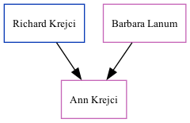

Ann Krejci 1975 -
[
Home
] | [
Surnames Index
] | [
Census Index
] | [
Family History
]
The child of
Richard Krejci
and
Barbara Lanum
.
Parents
Family Tree

Generated by
ged2site
. Last updated on Jun 13, 2024